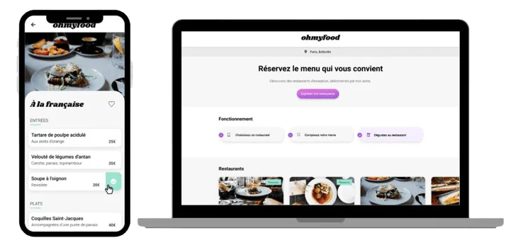
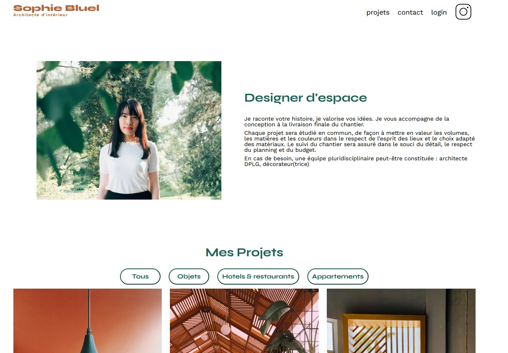
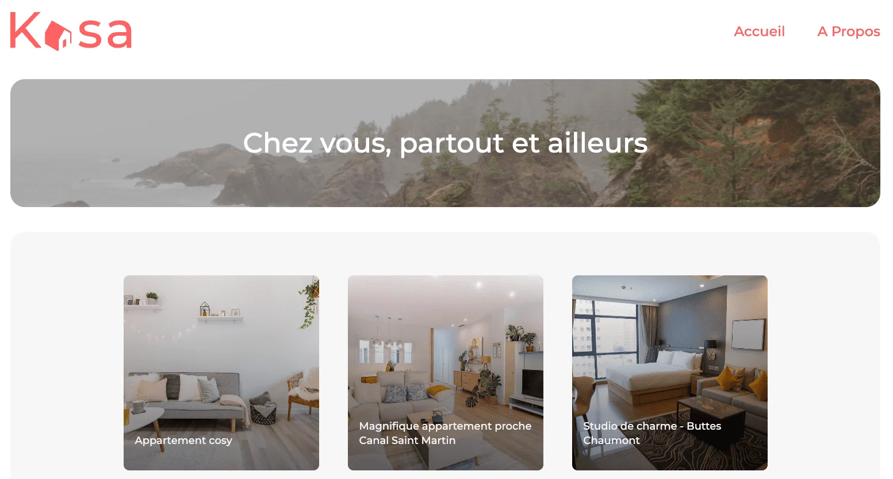

Bonjour, je suis
Sulayman
Développeur
Web
Me contacter
À propos
Sulayman
Passionné par le développement web et les technologies numériques, je me spécialise aujourd’hui dans la création de sites web modernes, performants et centrés sur l’utilisateur.
Issu d’une formation en développement web, j’ai acquis de solides bases techniques en intégration front-end, développement back-end, responsive design et création d’applications web complètes.
En parallèle, je continue de renforcer mes compétences sur des technologies comme React, Vue.js, PHP, Symfony et MySQL, ainsi que sur des outils comme WordPress, Webflow et Figma.
Mon objectif est d’intégrer une alternance en Bachelor Développeur Web chez Sup de Vinci afin de développer davantage mes compétences en développement logiciel, architecture web, programmation full-stack et création de solutions digitales innovantes.
Compétences
Compétences en développement web
Mon profil me permet de concevoir, développer et optimiser des sites et applications web modernes, performants et évolutifs, avec une approche à la fois technique et orientée utilisateur.
Projets

Ohmyfood
Création d’un site mobile-first de menus interactifs pour des restaurants. Ce projet m’a permis de travailler l’intégration front-end, les animations CSS, la hiérarchie visuelle et la conception d’une interface responsive.
Compétences mises en avant : intégration web, responsive design, animation CSS, organisation visuelle.
Stack : HTML, SCSS, CSS3

Page web dynamique – Sophie Bluel
Développement d’une page web dynamique en JavaScript avec système de filtres interactifs et gestion d’éléments dynamiques. Ce projet m’a permis d’améliorer la fluidité de l’expérience utilisateur et l’interaction avec l’interface.
Compétences mises en avant : logique front-end, interaction utilisateur, manipulation du DOM, JavaScript dynamique.
Stack : HTML, CSS, JavaScript

Application immobilière – Kasa
Création d’une application React présentant des logements à travers une interface claire et moderne. J’y ai travaillé la structuration des composants, la navigation, la lisibilité de l’information et l’adaptation responsive.
Compétences mises en avant : composants React, architecture front-end, responsive design, routage.
Stack : React, JavaScript, CSS

Optimisation SEO & performance – Nina Carducci
Audit et optimisation d’un site existant afin d’améliorer son référencement naturel, ses performances et son accessibilité. Ce projet m’a sensibilisé à l’importance de la qualité technique dans l’expérience utilisateur.
Compétences mises en avant : accessibilité, SEO, performance web, structure sémantique, optimisation technique.
Stack : HTML, CSS, JavaScript, Lighthouse, SEO

Débogage d’application web
Analyse et correction de bugs sur une application JavaScript existante. J’ai travaillé sur la fiabilité de l’interface, la résolution de problèmes et l’amélioration du fonctionnement global du produit.
Compétences mises en avant : debugging, qualité front-end, logique JavaScript, stabilité applicative.
Stack : JavaScript, Chrome DevTools

Argent Bank
Développement du front-end d’une application bancaire avec authentification et gestion de session. Ce projet m’a permis de renforcer ma capacité à concevoir une application structurée, sécurisée et connectée à une API.
Compétences mises en avant : architecture front-end, gestion d’état, authentification, API REST.
Stack : React, Redux, JavaScript, API REST
Mini réseau social
Développement d’une application type réseau social avec système d’inscription, connexion, publication de messages et interactions utilisateurs. Ce projet met en avant ma compréhension des fonctionnalités web dynamiques et de la logique applicative.
Compétences mises en avant : logique applicative, authentification, interactions utilisateur, développement back-end.
Stack : PHP, MySQL, HTML, CSS

Plateforme de streaming – Netflux
Conception d’une plateforme de streaming avec affichage dynamique des contenus, gestion des favoris et séparation front-end / back-end. J’y ai travaillé la logique full-stack, l’organisation des contenus et l’expérience utilisateur.
Compétences mises en avant : logique full-stack, API REST, base de données, interface dynamique.
Stack : Symfony, Vue.js, API REST, MySQL
Agence de voyages – Al-Nour Voyages
Projet personnel : Développement d’une plateforme web moderne dédiée à une agence de voyages spécialisée dans l’organisation de séjours, circuits et services touristiques. Ce projet permet de présenter différentes destinations, offres de voyage et informations pratiques via une interface dynamique et intuitive.
Compétences mises en avant : développement full-stack, conception d’API REST, gestion de base de données, architecture MVC, expérience utilisateur (UX/UI), responsive design.
Stack : Node.js, Express.js, PostgreSQL, HTML, CSS, JavaScript
Contact
Je recherche actuellement une alternance en Bachelor Développeur Web chez Sup de Vinci. N’hésitez pas à me contacter pour échanger sur une opportunité, un projet ou une collaboration.
Email : canteausulayman@mail.fr
Téléphone : 07 43 10 50 85
Localisation : France